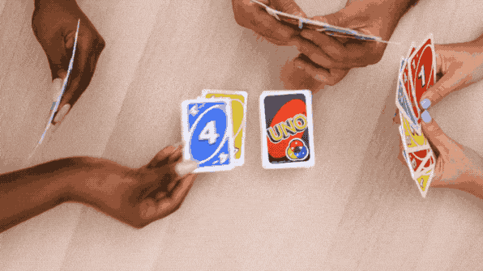

The game that we chose was Uno. The concept of the game is to end up with one card and once you have one card you then shout “UNO”.
If you are able to put your card down because you have the correct color that is shown in the general deck then you win or have the same number (does not need to be the same color) then you can also win like that.
What actions can I take?
Collecting your cards and organizing them by color & if you have
'+4' cards then keeping those seperate
What do I need to remember or keep track of?
You need to remember that you want to get rid of your cards as
fast as you can but also want to give whoever you're playing agaisnt more cards.
That can be done by putting down +2's or +4's.
What do I do over and over again?
Placing down cards and picking up cards from the fresh deck if you have nothing
to put down.
When do I need to make decision?
As soon as it's your turn.

Pseudocoding Process
One player shuffles the UNO card deck, then distributes 7 cards to each player at random
Players are recommended to keep their cards confidential
Once each player has a card, the one player puts down one card facing up, and the game stars
The game continues clockwise, the next player puts down a card that has either the same number color attached to it
The following palyer does the same, players have the potential to also place action cards that throw off the game
(draw 4, draw 2, color change, reverse direction, skip a turn, & more)
If a player puts down an action card, the next player has to foloow the instructions (either draw two card, skip,etc)
When one player successfully has only ONE card left in their deck & places it down only IF it is the same color of the game deck or the same number,
they then win the game